Google Earth
Source: https://en.wikipedia.org/wiki/Google_Earth
Category: products_consumer
Depth: 1
Summary
Google Earth is a web and computer program created by Google that renders a 3D representation of Earth based primarily on satellite imagery. The program maps the Earth by superimposing satellite images, aerial photography, and GIS data onto a 3D globe, allowing users to see cities and landscapes from various angles. Users can explore the globe by entering addresses and coordinates, or by using a keyboard or mouse. The program can also be downloaded on a smartphone or tablet, using a touch screen or stylus to navigate. Users may use the program to add their own data using Keyhole Markup Language and upload them through various sources, such as forums or blogs. Google Earth is able to show various kinds of images overlaid on the surface of the Earth and is also a Web Map Service client. In 2019, Google revealed that Google Earth covers more than 97 percent of the world.
Images
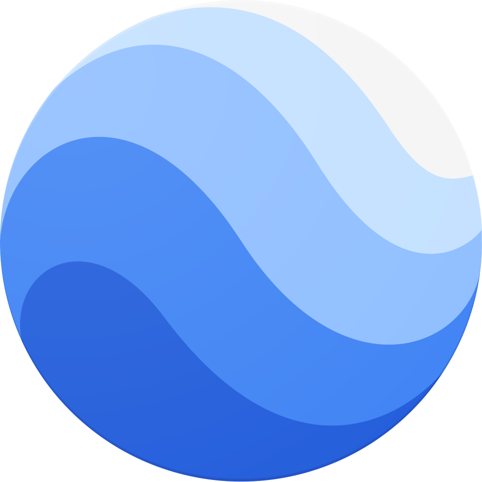
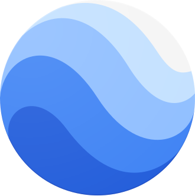
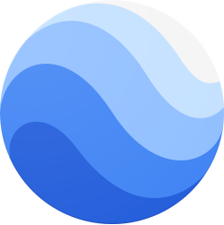
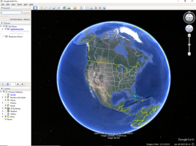
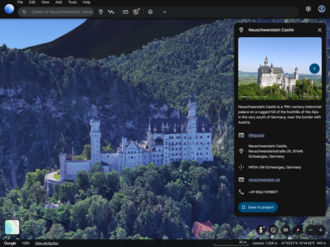
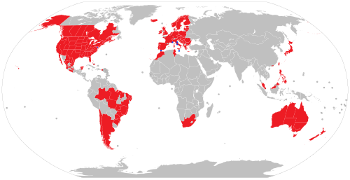
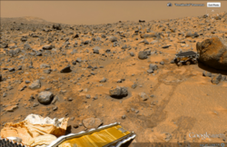
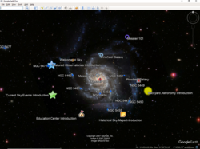
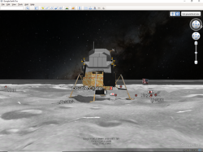
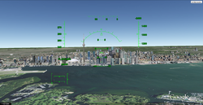
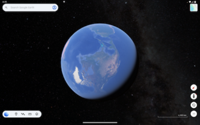
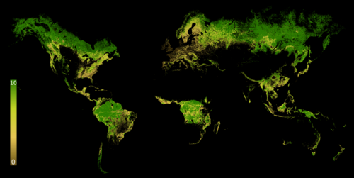
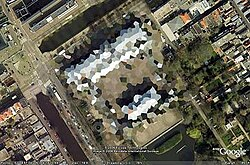
Full Article
3D Internet global map program
Google Earth is a web and computer program created by Google that renders a 3D representation of Earth based primarily on satellite imagery. The program maps the Earth by superimposing satellite images, aerial photography, and GIS data onto a 3D globe, allowing users to see cities and landscapes from various angles. Users can explore the globe by entering addresses and coordinates, or by using a keyboard or mouse. The program can also be downloaded on a smartphone or tablet, using a touch screen or stylus to navigate. Users may use the program to add their own data using Keyhole Markup Language and upload them through various sources, such as forums or blogs. Google Earth is able to show various kinds of images overlaid on the surface of the Earth and is also a Web Map Service client. In 2019, Google revealed that Google Earth covers more than 97 percent of the world.
In addition to Earth navigation, Google Earth provides a series of other tools through the desktop application, including a measure distance tool. Additional globes for the Moon and Mars are available, as well as a tool for viewing the night sky. A flight simulator game is also included. Other features allow users to view photos from various places uploaded to Panoramio, information provided by Wikipedia on some locations, and Street View imagery. The web-based version of Google Earth also includes Voyager, a feature that periodically adds in-program tours, often presented by scientists and documentarians.
Google Earth has been viewed by some as a threat to privacy and national security, leading to the program being banned in multiple countries. Some countries have requested that certain areas be obscured in Google's satellite images, usually areas containing military facilities.
Background
The core technology behind Google Earth was originally developed at Intrinsic Graphics in the late 1990s. At the time, the company was developing 3D gaming software libraries. As a demo of their 3D software, they created a spinning globe that could be zoomed into, similar to the Powers of Ten film. The demo was popular, but the board of Intrinsic wanted to remain focused on gaming, so in 1999, they created Keyhole Corporation, headed by John Hanke. Keyhole then developed a way to stream large databases of mapping data over the internet to client software, a key part of the technology, and acquired patchworks of mapping data from governments and other sources. The product, called "Keyhole EarthViewer", was sold on CDs for use in fields such as real estate, urban planning, defense, and intelligence; users paid a yearly fee for the service. Despite making several capital deals with Nvidia and Sony, the small company was struggling to pay and retain employees.
Fortunes for the company changed in early 2003 during the 2003 invasion of Iraq, when Dave Lorenzini (Director at Keyhole) enticed CNN, ABC, CBS and other major news networks to use their sophisticated 3D flyby imagery to illustrate Baghdad activities for viewers, in exchange for on-air attribution. During the invasion, It was used extensively by Miles O'Brien and other on-air broadcasters, allowing CNN and millions of viewers to follow the progress of the war in a way that had never been seen before. Public interest in the software exploded and Keyhole servers were not able to keep up with demand. Keyhole was soon contacted by the Central Intelligence Agency's venture capital firm, In-Q-Tel, and the National Geospatial-Intelligence Agency, for use with defense mapping databases, which gave Keyhole a much-needed cash infusion. Intrinsic Graphics was sold in 2003 to Vicarious Visions after its gaming libraries did not sell well, and its core group of engineers and management including Brian McClendon and Michael Jones transitioned to Keyhole with Hanke remaining at the head.
History
Around 2004, Google was finding that over 25% of its searches were of a geospatial character, including searches for maps and directions.
In October 2004, Google acquired Keyhole as part of a strategy to better serve its users. Keyhole's Earth Viewer was the foundation for what became Google Earth in 2005 while other aspects of its core technology were integrated into Google Maps.
In 2021, Google replaced its layers feature with a new one on its Google Earth software.[clarification needed] This replacement consolidated some layers, but also removed some layers and features.
Google Earth is featured prominently in the 2021 German miniseries The Billion Dollar Code, which serves as a fictionalized account of a 2014 patent infringement lawsuit brought against Google by the German creators of Terravision. The series, which was shown on Netflix, is prefaced by an episode of interviews with the ART+COM developers of Terravision and their legal representative. One of the co-founders of Keyhole has published a first-hand account claiming to debunk the origins, timelines, and interpretations depicted in the fictionalized miniseries. Not shown in the mini-series was that the patent owned by ART+COM and used to challenge Google was completely invalidated after it was shown that another so-called TerraVision, this one at the Stanford Research Institute, predated ART+COM's ideas by several years.
Version history
| Version | Release date | Changes |
|---|---|---|
| 1.0 | June 10, 2001 | |
| 1.4 | January 2002 | |
| 1.6 | February 2003 | |
| 1.7.2 | October 2003 | - Last version for Windows 95 and Windows NT 4.0 |
| 2.2 | August 2004 | - Last version for Windows 98 and Windows Me |
| 3.0 | June 2005 | - The first version was released after Google acquired Keyhole Corporation |
| 4.0 | June 2006 | |
| 4.1 | May 2007 | |
| 4.2 | August 2007 | - Google Sky was introduced - A flight simulator was added |
| 4.3 | April 2008 | - First release to implement KML version 2.2 - Google Street View was added - Last version for Windows 2000 - Last version for Mac OS X Panther (PPC) |
| 5.0 | May 2009 | - Google Ocean was introduced - Historical Imagery was introduced |
| 5.1 | November 2009 | |
| 5.2 | July 2010 | - Last version for Mac OS X Tiger (PPC & Intel) and Leopard (PPC) |
| 6.0 | March 2011 | - 3D Trees were added |
| 6.1 | October 2011 | |
| 6.2 | April 2012 | - Last version for Mac OS X Leopard (Intel) |
| 7.0 | December 2012 | - Support for 3D Imagery data was introduced - Tour Guide was introduced |
| 7.1 | April 2013 | - Last version for Mac OS X Snow Leopard and Mac OS X Lion - Last version for Windows XP and Windows Vista |
| 7.3 | July 2017 | - Google Earth Pro became the standard version of the desktop program. (A free license key was also publicly provided by Google for all the earlier Pro versions.) - The desktop application continues to be Google Earth Pro 7.3, with infrequent updates. |
| 8.0 | October 2014 | - Android-only update with new 3D rendering engine and feature to import KML files from Google Drive. |
| 9.0 | April 2017 | - Redesign of the mobile and web apps featuring Voyager, "I'm Feeling Lucky" button, and 3D mode. - iOS received update in August 2017. |
| 10.0 | September 2023 | - Mobile and web apps updated to latest Material Design theme with support for project creation. Voyager was removed from app. |
Imagery
Google Earth's imagery is displayed on a digital globe, which displays the planet's surface using a single composited image from a far distance. After zooming in far enough, the imagery transitions into different imagery of the same area with finer detail, which varies in date and time from one area to the next. The imagery is retrieved from satellites or aircraft. Before the launch of NASA and the USGS's Landsat 8 satellite, Google relied partially on imagery from Landsat 7, which suffered from a hardware malfunction that left diagonal gaps in images. In 2013, Google used datamining to remedy the issue, providing what was described as a successor to the Blue Marble image of Earth, with a single large image of the entire planet. This was achieved by combining multiple sets of imagery taken from Landsat 7 to eliminate clouds and diagonal gaps, creating a single "mosaic" image. Google has since used myriad sources to provide imagery in a higher quality and with greater frequency. Imagery is hosted on Google's servers, which are contacted by the application when opened, requiring an Internet connection.
Imagery resolution ranges from 0.15 to 15 meters (0.49 to 49.21 ft) except for the ocean floor, which ranges from 100 to 1,000 meters (330 to 3,280 ft). For much of the Earth, Google Earth uses digital elevation model data collected by NASA's Shuttle Radar Topography Mission. This creates the impression of three-dimensional terrain, even where the imagery is only two-dimensional.
Google asserts that every image created from Google Earth using satellite data provided by Google Earth is a copyrighted map. Any derivative from Google Earth is made from data that Google claims copyright under United States Copyright Law. Google grants license to this data allowing, among other things, non-commercial personal use of the images (e.g., on a personal website or blog) as long as copyrights and attributions are preserved. By contrast, images created with NASA's globe software WorldWind use The Blue Marble, Landsat, or USGS imagery, each of which is in the public domain.
In version 5.0, Google introduced Historical Imagery, allowing users to view earlier imagery. Clicking the clock icon in the toolbar opens a time slider, which marks the time of available imagery from the past. This feature allows for observation of an area's changes over time. Utilizing the timelapse feature allows for the ability to view a zoom-able video as far back as 38 years.
3D imagery
Google Earth shows 3D building models in some cities, including photorealistic 3D imagery made using photogrammetry. The first 3D buildings in Google Earth were created using 3D modeling applications such as SketchUp and, beginning in 2009, Building Maker, and were uploaded to Google Earth via the 3D Warehouse. In June 2012, Google announced that it would be replacing user-generated 3D buildings with an auto-generated 3D mesh. This would be phased in, starting with select larger cities, with the notable exception of cities such as London and Toronto which required more time to process detailed imagery of their vast number of buildings. The reason given is to have greater uniformity in 3D buildings and to compete with Nokia Here and Apple Maps, which were already using this technology. The coverage began that year in 21 cities in four countries. By early 2016, 3D imagery had been expanded to hundreds of cities in over 40 countries, including every U.S. state and encompassing every continent except Antarctica.
In 2009, in a collaboration between Google and the Museo del Prado in Madrid, the museum selected 14 of its paintings to be photographed and displayed at the resolution of 14,000 megapixels inside the 3D version of the Prado in Google Earth and Google Maps.
Street View
Main article: Google Street View
On April 15, 2008, with version 4.3, Google fully integrated Street View into Google Earth. Street View displays 360° panoramic street-level photos of select cities and their surroundings. The photos were taken by cameras mounted on automobiles, can be viewed at different scales and from many angles, and are navigable by arrow icons imposed on them.
Using Street View on Google Earth, users can visit and explore 30 UNESCO World Heritage Sites with historical context and pins for each. The sites include the Great Pyramid, the Taj Mahal, Sagrada Família, the Dolomites, the Royal Botanic Gardens, Kew, and the Great Sphinx.
In 2019, Walt Disney World and Pixar partnered with Google to create Pixar Street View. An activation that enabled viewers to search for hidden Pixar Easter eggs inside Toy Story Land at Disney's Hollywood Studios through street view.
Water and ocean
Introduced in Google Earth 5.0 in 2009, the Google Ocean feature allows users to zoom below the surface of the ocean and view the 3D bathymetry. Supporting over 20 content layers, it contains information from leading scientists and oceanographers. On April 14, 2009, Google added bathymetric data for the Great Lakes.
In June 2011, Google increased the resolution of some deep ocean floor areas from 1-kilometer grids to 100 meters. The high-resolution features were developed by oceanographers at Columbia University's Lamont–Doherty Earth Observatory from scientific data collected on research cruises. The sharper focus is available for about 5 percent of the oceans. This can be seen in the Hudson off New York City, the Wini Seamount near Hawaii, and the Mendocino Ridge off the U.S. Pacific coast.
Outer space
Google has programs and features, including within Google Earth, allowing exploration of Mars, the Moon, the view of the sky from Earth and outer space, including the surfaces of various objects in the Solar System.
Google Sky
Google Sky is a feature that was introduced in Google Earth 4.2 on August 22, 2007, in a browser-based application on March 13, 2008, and to Android smartphones, with augmented reality features. Google Sky allows users to view stars and other celestial bodies. It was produced by Google through a partnership with the Space Telescope Science Institute (STScI) in Baltimore, the science operations center for the Hubble Space Telescope. Alberto Conti and his co-developer Carol Christian of STScI planned to add the public images from 2007, as well as color images of all of the archived data from Hubble's Advanced Camera for Surveys. Then-newly released Hubble pictures were added to the Google Sky program as soon as they were issued.
New features such as multi-wavelength data, positions of major satellites and their orbits as well as educational resources are provided to the Google Earth community and also through Christian and Conti's website for Sky. Also visible on Sky mode are constellations, stars, galaxies, and animations depicting the planets in their orbits. A real-time Google Sky mashup of recent astronomical transients, using the VOEvent protocol, is provided by the VOEventNet collaboration. Other programs similar to Google Sky include Microsoft WorldWide Telescope and Stellarium.
Google Mars
Google Mars is an application within Google Earth that is a version of the program for imagery of the planet Mars. Google also operates a browser-based version, although the maps are of a much higher resolution within Google Earth, and include 3D terrain, as well as infrared imagery and elevation data. There are also some extremely high-resolution images from the Mars Reconnaissance Orbiter's HiRISE camera that are of a similar resolution to those of the cities on Earth. Finally, there are many high-resolution panoramic images from various Mars landers, such as the Mars Exploration Rovers, Spirit and Opportunity, that can be viewed in a similar way to Google Street View.
Mars also has a small application found near the face on Mars. It is called Meliza, a robot character the user can speak with.
Google Moon
Originally a browser application, Google Moon was a feature that allows exploration of the Moon. Google brought the feature to Google Earth for the 40th anniversary of the Apollo 11 mission on July 20, 2009. It was announced and demonstrated to a group of invited guests by Google along with Buzz Aldrin at the Newseum in Washington, D.C. Google Moon includes several tours, including one for the Apollo missions, incorporating maps, videos, and Street View-style panoramas, all provided by NASA.
Other features
Google Earth has numerous features that allow the user to learn about specific places. These are called "layers", and include different forms of media, including photo and video. Some layers include tours, which guide the user between specific places in a set order. Layers are created using the Keyhole Markup Language, or KML, which users can also use to create customized layers. Locations can be marked with placemarks and organized in folders; For example, a user can use placemarks to list interesting landmarks around the globe, then provide a description with photos and videos, which can be viewed by clicking on the placemarks while viewing the new layer in the application.
In December 2006, Google Earth added a new integration with Wikipedia and Panoramio. For the Wikipedia layer, entries are scraped for coordinates via the Coord templates. There is also a community layer from the project Wikipedia-World. More coordinates are used, different types are in the display, and different languages are supported than the built-in Wikipedia layer. The Panoramio layer features pictures uploaded by Panoramio users, placed in Google Earth based on user-provided location data. In addition to flat images, Google Earth also includes a layer for user-submitted panoramic photos, navigable in a similar way to Street View.
Google Earth includes multiple features that allow the user to monitor current events. In 2007, Google began offering users the ability to monitor traffic data provided by Google Traffic in real-time, based on information crowdsourced from the GPS-identified locations of cell phone users.
Flight simulators
In Google Earth 4.2, a flight simulator was added to the application. It was originally a hidden feature when introduced in 2007, but starting with 4.3, it was given a labeled option in the menu. In addition to keyboard control, the simulator can be controlled with a mouse or joystick. The simulator also runs with animation, allowing objects such as planes to animate while on the simulator.
Another flight simulator, GeoFS, was created under the name GEFS-Online using the Google Earth Plug-in API to operate within a web browser. As of September 1, 2015, the program now uses the open-source program CesiumJS due to the Google Earth Plug-in being discontinued.
Liquid Galaxy
Main article: Liquid Galaxy
Liquid Galaxy is a cluster of computers running Google Earth creating an immersive experience. On September 30, 2010, Google made the configuration and schematics for their rigs public, placing code and setup guides on the Liquid Galaxy wiki. Liquid Galaxy has also been used as a panoramic photo viewer using KRpano, as well as a Google Street View viewer using Peruse-a-Rue Peruse-a-Rue is a method for synchronizing multiple Maps API clients.
Variants
| icon | This article is missing information about the specific versions and their respective differences. Please expand the article to include this information. Further details may exist on the talk page. (January 2023) |
Google Earth has been released on macOS, Linux, iOS, and Android. The Linux version began with the version 4 beta of Google Earth, as a native port using the Qt toolkit. The Free Software Foundation considers the development of a free compatible client for Google Earth to be a High Priority Free Software Project. Google Earth was released for Android on February 22, 2010, and on iOS on October 27, 2008. The mobile versions of Google Earth can make use of multi-touch interfaces to move on the globe, zoom or rotate the view, and allow to select the current location. An automotive version of Google Earth was made available in the 2010 Audi A8. On February 27, 2020, Google opened up its web-based version of Earth to browsers like Firefox, Edge, and Opera.
Google Earth Pro
Google Earth Pro was originally the business-oriented upgrade to Google Earth, with features such as a movie maker and data importer. Up until late January 2015, it was available for $399/year, though Google decided to make it free to the public. Google Earth Pro is currently the standard version of the Google Earth desktop application as of version 7.3. The Pro version includes add-on software for movie making, advanced printing, and precise measurements, and is available for Windows, macOS, and Linux.
Google Earth Plus
Discontinued in December 2008, Google Earth Plus was a paid subscription upgrade to Google Earth that provided customers with the following features, most of which have become available in the free Google Earth. One such feature was GPS integration, which allowed users to read tracks and waypoints from a GPS device. A variety of third-party applications have been created which provide this functionality using the basic version of Google Earth by generating KML or KMZ files based on user-specified or user-recorded waypoints.
Google Earth Enterprise
Google Earth Enterprise is designed for use by organizations whose businesses could take advantage of the program's capabilities, for example by having a globe that holds company data available for anyone in that company. As of March 20, 2015, Google has retired the Google Earth Enterprise product, with support ended on March 22, 2017. Google Earth Enterprise allowed developers to create maps and 3D globes for private use, and host them through the platform. GEE Fusion, GEE Server, and GEE Portable Server source code was published on GitHub under the Apache2 license in March 2017.
Google Earth Studio
Google Earth Studio is a web-based version of Google Earth used for animations using Google Earth's 3D imagery. As of June 2021, it is preview-only and requires signing up to use it. It features keyframe animation, presets called "Quick-Start Projects", and 3D camera export.
Google Earth 9
Google Earth 9 is a version of Google Earth first released on April 18, 2017, having been in development for two years. The main feature of this version was the launching of a new web version of Google Earth. This version added the "Voyager" feature, whereby users can view a portal page containing guided tours led by scientists and documentarians. The version also added an "I'm Feeling Lucky" button, represented by a dice, which takes the user to a random location on Earth along with showing them a "Knowledge Card" containing a short excerpt from the location's Wikipedia article.
Google Earth Plug-in
The Google Earth API was a free beta service, allowing users to place a version of Google Earth into web pages. The API enabled sophisticated 3D map applications to be built. At its unveiling at Google's 2008 I/O developer conference, the company showcased potential applications such as a game where the player controlled a milktruck atop a Google Earth surface. The Google Earth API has been deprecated as of December 15, 2014, and remained supported until December 15, 2015. Google Chrome ended support for the Netscape Plugin API (which the Google Earth API relies on) by the end of 2016.
Google Earth VR
On November 16, 2016, Google released a virtual reality version of Google Earth for Valve's Steam computer gaming platform. Google Earth VR allows users to navigate using VR controllers, and is currently compatible with the Oculus Rift and HTC Vive virtual reality headsets. On September 14, 2017, as part of Google Earth VR's 1.4 update, Google added Street View support.
Google Earth Engine
Google Earth Engine is a cloud computing platform for processing satellite imagery and other geospatial and observation data. It provides access to a large database of satellite imagery and the computational power needed to analyze those images. Google Earth Engine allows observation of dynamic changes in agriculture, natural resources, and climate using geospatial data from the Landsat satellite program, which passes over the same places on the Earth every sixteen days. Google Earth Engine has become a platform that makes Landsat and Sentinel-2 data easily accessible to researchers in collaboration with the Google Cloud Storage. Google Earth Engine provides a data catalog along with computers for analysis; this allows scientists to collaborate using data, algorithms, and visualizations. The platform provides Python and JavaScript application programming interfaces for making requests to the servers, and includes a graphical user interface for developing applications.
An early prototype of Earth Engine, based on the Carnegie Institute for Science's CLASlite system and Imazon's Sistema de Alerta de Desmatamento (SAD) was demonstrated in 2009 at COP15, and Earth Engine was officially launched in 2010 at COP16, along with maps of the water in the Congo Basin and forests in Mexico produced by researchers using the tool.
In 2013, researchers from University of Maryland produced the first high-resolution global forest cover and loss maps using Earth Engine, reporting an overall loss in global forest cover. Other early applications using Earth Engine spanned a diverse variety of topics, including: Tiger Habitat Monitoring, Malaria Risk Mapping, Global Surface Water, increases in vegetation around Mount Everest, and the annual Forest Landscape Integrity Index. Since then, Earth Engine has been used in the production of hundreds of scientific journal articles in many fields including: forestry and agriculture, hydrology, water quality monitoring and assessment, natural disaster monitoring and assessment, urban mapping, atmospheric and climate sciences and soil mapping.
Earth Engine has been free for academic and research purposes since its launch, but commercial use was prohibited until 2021, when Google announced a preview of Earth Engine as a commercial cloud offering and early adopters that included Unilever, USDA and Climate Engine.
Controversy and criticism
Further information: List of satellite map images with missing or unclear data
The software has been criticized by a number of special interest groups, including national officials, as being an invasion of privacy or posing a threat to national security. The typical argument is that the software provides information about military or other critical installations that could be used by terrorists. Google Earth has been blocked by Google in Iran and Sudan since 2007, due to United States government export restrictions. The program has also been blocked in Morocco since 2006 by Maroc Telecom, a major service provider in the country.
In the academic realm, increasing attention has been devoted to both Google Earth and its place in the development of digital globes. In particular, the International Journal of Digital Earth features multiple articles evaluating and comparing the development of Google Earth and its differences when compared to other professional, scientific, and governmental platforms. Google Earth's role in the expansion of "Earth observing media" has been examined to understand how it is shaping a shared cultural consciousness regarding climate change and humanity's capacity to treat the Earth as an engineerable object.
Defense
- In 2006, one user spotted a large topographical replica in a remote region of China. The model is a small-scale (1/500) version of the Karakoram Mountain Range, which is under the control of China but claimed by India. When later confirmed as a replica of this region, spectators began entertaining military implications.
- In July 2007, it was reported that a new Chinese Navy Jin-class nuclear ballistic missile submarine was photographed at the Xiaopingdao Submarine Base south of Dalian.
- Hamas and the al-Aqsa Martyrs' Brigades have reportedly used Google Earth to plan Qassam rocket attacks on Israel from Gaza. (See: Palestinian rocket attacks on Israel)
- On February 13, 2019, 3D imagery was launched in four of Taiwan's cities: Taipei, New Taipei, Taoyuan, and Taichung. This has caused concerns from Taiwanese officials, such as Taiwan's Defense Minister Yen Teh-fa, saying that the 3D imagery exposed some of its Patriot missile sites. Ten days later on February 23, Google confirmed that it would be removing all of its 3D imagery from Taiwan.
National security
- Former president of India A. P. J. Abdul Kalam expressed concern over the availability of high-resolution pictures of sensitive locations in India. Google subsequently agreed to censor such sites.
- The Indian Space Research Organisation said Google Earth poses a security threat to India and seeks dialogue with Google officials.
- The South Korean government expressed concern that the software offers images of the presidential palace and various military installations that could possibly be used by its hostile neighbor North Korea.
- In 2006, Google Earth began offering detailed images of classified areas in Israel. The images showed Israel Defense Forces bases, including secret Israeli Air Force facilities, Israel's Arrow missile defense system, military headquarters and Defense Ministry compound in Tel Aviv, a top-secret power station near Ashkelon, and the Negev Nuclear Research Center. Also shown was the alleged headquarters of Mossad, Israel's foreign intelligence service, whose location is highly classified.
- As a result of pressure from the United States government, the residence of the vice president at Number One Observatory Circle was obscured through pixelization in Google Earth and Google Maps in 2006, but this restriction has since been lifted. The usefulness of this downgrade is questionable, as high-resolution photos and aerial surveys of the property are readily available on the Internet elsewhere. Capitol Hill also used to be pixelized in this way. The Royal Stables in The Hague, Netherlands, also used to be pixelized. This is also true for airports in Greece.
- The lone surviving gunman involved in the 2008 Mumbai attacks admitted to using Google Earth to familiarise himself with the locations of buildings used in the attacks.
- Michael Finton, aka Talib Islam, used Google Earth in planning his attempted September 24, 2009, bombing of the Paul Findley Federal Building and the adjacent offices of Congressman Aaron Schock in Springfield, Illinois.
Other concerns
- Operators of the Lucas Heights nuclear reactor in Sydney, New South Wales, Australia, asked Google to censor high-resolution pictures of the facility. They later withdrew the request.
- In 2009, Google superimposed old woodblock prints of maps from 18th- and 19th-century Japan over Japan today. These maps marked areas inhabited by the burakumin caste, formerly known as eta (穢多), literally "abundance of defilement", who were considered "non-humans" for their "dirty" occupations, including leather tanning and butchery. Descendants of members of the burakumin caste still face discrimination today and many Japanese people feared that some would use these areas, labeled etamura (穢多村 "eta village"), to target current inhabitants of them. These maps are still visible on Google Earth, but with the label removed where necessary.
- Late 2000s versions of Google Earth require a software component running in the background that will automatically download and install updates. Several users expressed concerns that there is not an easy way to disable this updater, as it runs without the permission of the user.
- In February 2014, the Berlin-based ART+COM charged that Google Earth products infringe U.S. Patent No. RE44,550, entitled "Method and Device for Pictorial Representation of Space-related Data" and had remarkable similarity to Terravision which was developed by ART+COM in 1993 and patented in 1995. The court decided against Art+Com both at trial and on appeal because trial testimony showed that Art+Com was aware of an existing, substantially similar invention that it failed to mention as "prior art" in its patent application, thereby invalidating their patent. Stephen Lau, a former employee of federally funded, not-for-profit Stanford Research Institute ("SRI") testified that he helped develop SRI Terravision, an earth visualization application, and that he wrote 89% of the code. He further testified that he shared and discussed SRI Terravision code with Art+Com. Both systems used a multi-resolution pyramid of imagery to let users zoom from high to low altitudes, and both were called Terravision. Art+Com agreed to rename their product because SRI's came first. Stephen Lau died from COVID-19 in March 2020.
See also
- Elevation
- Esri, publisher of ArcGIS Earth
- Flyover (Apple Maps), similar 3D feature on Apple Maps
- List of space flight simulation games
- Planetarium software
- List of observatory software
- Orthophotomap, the type of aerial and satellite imagery present in Google Earth
- Virtual globe, the category of software that includes Google Earth
- Web mapping
References
External links

Wikimedia Commons has media related to Google Earth.
Map all coordinates using OpenStreetMap
Download coordinates as:
- KML
- GPX (all coordinates)
- GPX (primary coordinates)
- Official Google Maps and Earth blog
- Google Earth Outreach
- Map of 3D-imagery coverage in Google Earth
| - v - t - e Google | |
|---|---|
| a subsidiary of Alphabet | |
| Company | |
| Development | |
| Software | |
| Hardware | |
| - v - t - e Litigation | |
| Related | |
| Italics denote discontinued products. - Category - Outline |
| - v - t - e Google Maps | ||
|---|---|---|
| Related products | - Waze - Arts & Culture | |
| Views and mapping sites | - Earth - Street View | |
| Street View | ||
| Other | - Historypin - Google Maps pin - Google Maps Road Trip - Argleton |
| - v - t - e Astronomy software | |
|---|---|
| Open source | - Cartes du Ciel - Celestia - NASA World Wind - Stellarium - WorldWide Telescope |
| Freeware | - Google Mars - Google Moon - Google Sky |
| Proprietary | - SpaceEngine |


{kind=link}
| Authority control databases Edit this at Wikidata | |
|---|---|
| International | - GND |
| National | - United States - Czech Republic - Israel |